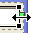

Procedure
This scenario will test out the features and behavior of the SWT
GridLayout manager.
Setup
Add the SWT library to your
project if it's not already there (instructions here).
Import SWTGrid.zip into this Java Project.
Basic Canvas Manipulation
Open SWTGrid.java with the Visual Editor
Verify the example displays properly
on the canvas:
Select the Shell and Verify that
the grid shows properly:
Select the Canvas and Verify
that the grid disappears.
Select a Button from the palette and attempt to drop it
on the grid. Do not drop it yet... just drag it over the grid to observe the
different types of feedback.
The feedback is a yellow vertical bar that indicates where the dropped
component will be inserted into the grid and whether it will insert into a row
or create a new column.
Verify the grid is shown as you move
the mouse over the Shell.
Verify the grid is hidden as you move
the mouse out from the Shell.
For each of the scenarios below, place the cursor near where the cursor shows
up in the image.
Verify that the feedback indicator is
in the same position (or near to the position depending on platform
differences) as shown in the image.
1)
2)
3)
4)
5)
6)
7)
8)
9)
10)
Drop a button in the each position indicated in the list below.
Verify the button is placed in the
position indicated, the other components reflow properly, and the grid is
redrawn to show the new grid layout.
Press undo to remove the button, and drop another button in the next
position.
Run this test in the positions indicated in the images above:
1, 2, 7, 8 and 10.
Select a control on the Shell and drag it
Verify the grid is shown
Verify the position indicator is in
the correct place for the various drop positions.
Drop the component at some position on the grid.
Verify the component is placed in the
position indicated, the other components reflow properly, and the grid is
redrawn to show the new grid layout.
Select the Shell and drag and drop it at a different position on the canvas.
Verify the grid is redrawn properly
at the new position.
Resize the shell by dragging the corner handles.
Verify the grid is redrawn to reflect
the new shell size.
Customize Layout Window
Select
the Shell and launch the Customize Layout Window from the Eclipse toolbar
Verify the Customize Layout window is
shown, with the SWT Grid layout page shown in the Layout tab
Switch to the Component tab
Verify the Component tab says no
customization options available.
Select a Control on the Shell on the canvas
Verify the Component tab updates to
show the Grid component page.

Click on an empty space on the graphical canvas.
Verify that both the Layout and
Component tabs are updated to show no customization options available.
Select a control on the Shell again.
Verify that both the Layout and
Component tabs are updated showing the Grid pages.
Switch to the Component tab
Select various controls on the Shell
Verify the Component options'
selections and values update as the selection changes.
Try out changing all of the Component options
Verify each change is reflected
properly on the canvas, in the source, and on the property sheet (Expand the
layoutData property to see changes on the property sheet)
Verify the grid is redrawn properly
to reflect the changes made.
Select multiple controls on the Shell (hold down Ctrl to select many, or use
the Marquee tool)
Change some options on the Component page.
Verify that the changes are made to
all of the selected controls.
Switch to the Layout tab
Try out changing all of the Layout options
Verify each change is reflected
properly on the canvas, in the source, and on the property sheet (Select the
shell and expand the layout property to see changes on the property sheet)
Verify the grid is redrawn properly
to reflect the changes made.
Revert the file to undo any modifications made.
Spanning Rows and Columns
Select
the Text on the shell
Verify that there's a small green
rectangle on the east and south edges of the Text.
These are handles for spanning horizontally or vertically which when dragged to
another column or row will change the horizontalSpan or verticalSpan
values of the GridData. Move your mouse over each green rectangle... Verify the east handle change to a horizontal
cursor

and the south
handle changes to a vertical cursor
Click and drag the
south handle down.
Verify the cells below become shaded
as the cursor moves into them.
Position the cursor over the row below, and release.
Verify the Text expands into the new row
created below it properly.
Click and drag the east handle to the left, into the first column occupied by
the Text and release
Verify the Text shrinks to span only
one column and the other components reflow properly
Free Play
Create a new Visual Class extending Object, and drop a
Shell on the Canvas. Set the layout of the Shell to GridLayout.
Play around with dropping various components using the GridLayout
Use the Customize Layout window the property sheet, and the source to
manipulate the GridLayout and the component's GridData.
Drop a Composite onto the Shell, set it's layout to GridData, and add more
components to the Composite.
Verify the feedback, visuals,
and behavior all act as expected of a GridLayout.
Save and Run your creation as a Java Bean.
Verify the running class reflects the
same visual shown on the canvas.